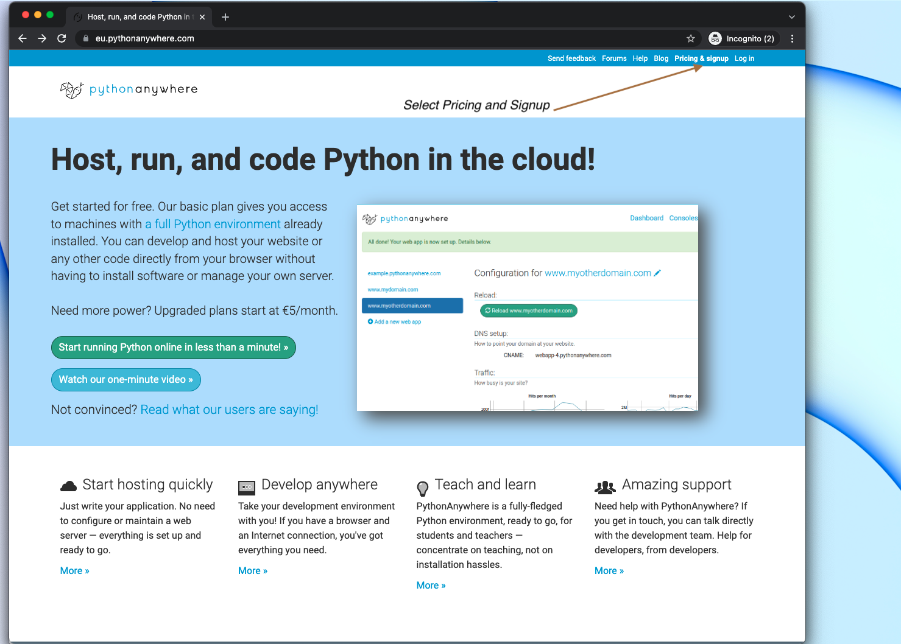
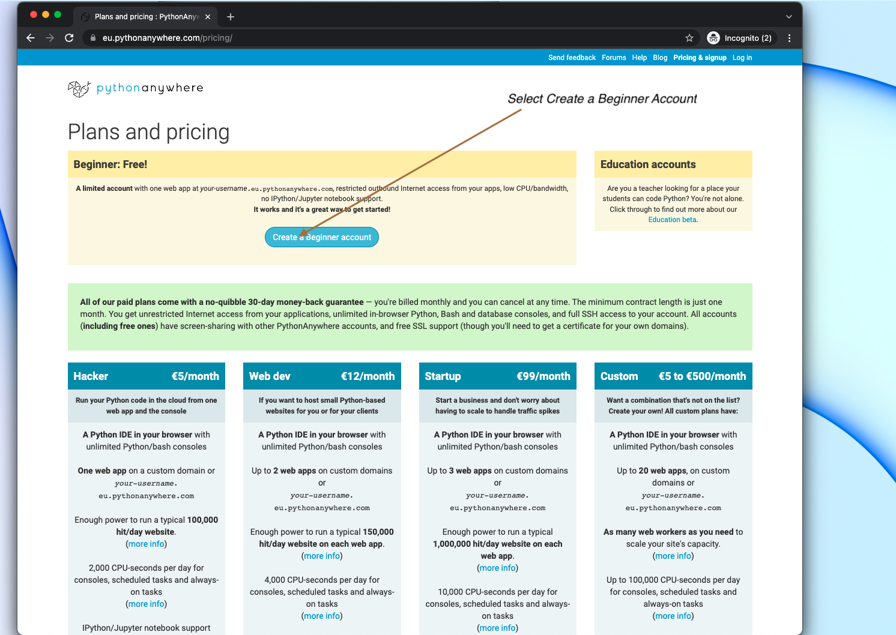
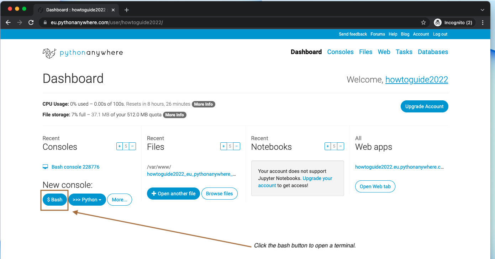
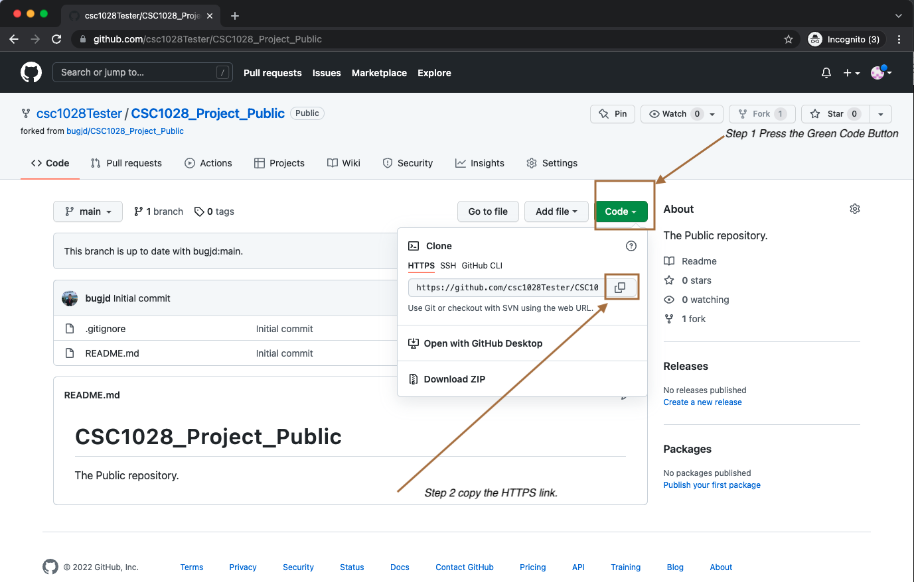
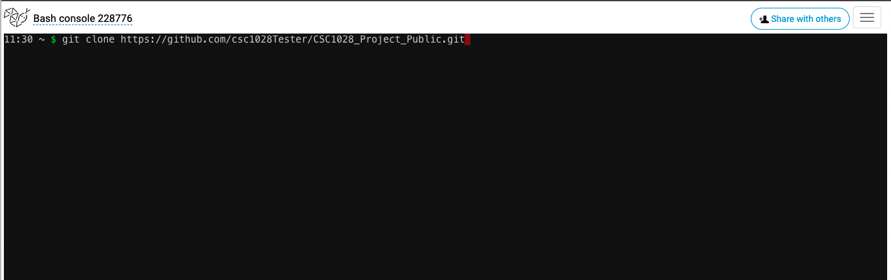
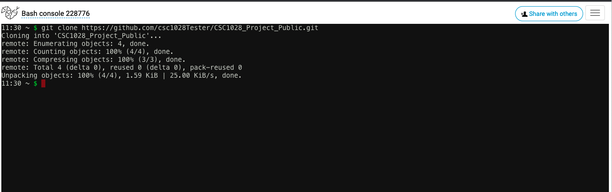
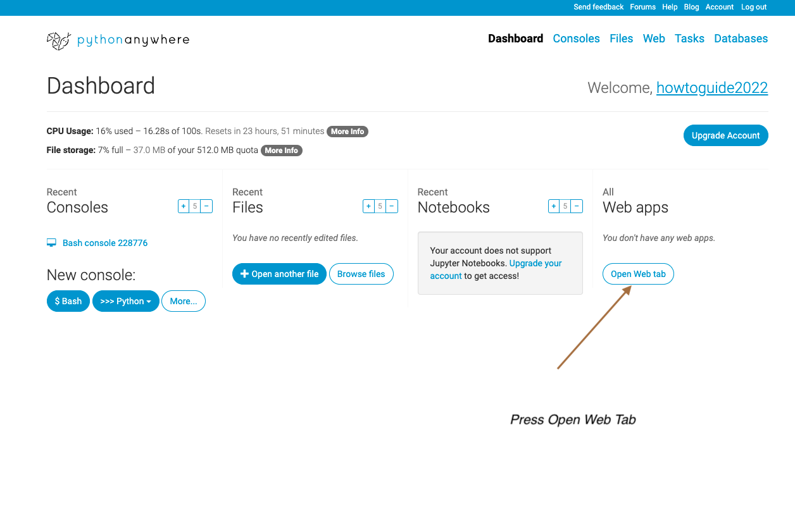
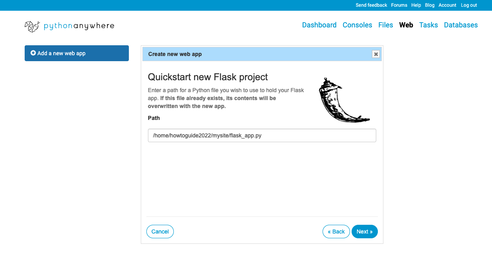

In this mini guide I will show you how to set up your enviornment with Python Anywhere hosting your instance of the human program.
I would recommend using PyCharm for your python IDE. you should be able to do this on any version of PyCharm, as I am a student I have access to the Professional Version of the Software which I written this tutorial with but it should be quite similar in the Community Version). To download the software click here.
CSC1028_Project_Public by default)Now that we can open the code you can add you improvements to it using the project tab on the left hand side of the IDE to select between the html templates and the python files.
When you want to try out your code on python anywhere you simply need to commit and push it to GitHub.
git add . this will make all your edits visable to git.git commit -m "***YOUR MESSAGE***" replacing YOUR MESSAGE with what you have changed.git push to add the code to Github.Helpful hint: If you're not logged in with github through your terminal you will have to sign in. I recommend using this GitHub Doc on how to save your GitHub details to your computer.
Now that we have can work with our code it's time to show it to the world!. Follow these steps to add it to Python Anywhere.
Go to Python Anywhere and press 'pricing and signup' 
Press create a Beginner Account 
Press the bash button 
Open a new tab and get the https link for your copy of the repository. 
now go back to the other tab. and type the following replacing YOUR HTTPS LINK with your link.
git clone ***YOUR HTTPS LINK***

Press the return key on your computer and it should bring down the code from your github. 
return to the dashboard page and open the web tab. 
On the page that appears, Select Flask
then select Python 3.7
after this Select a page that is not an actual page to be your main page, don't wory, we will fix this in a minute. 
open your wsji file.
change the last line to open from app and change the directory to your apps directory (the variable named project_home). Your directory should be /home/**YOUR python anywhere name**/CSC1028_Project_Public replacing YOUR python anywhere name with your python anywhere name.
This part of the tutorial was partly based on this tutorial by python anywhere
To update your python anywhere could just run git pull from the bash terminal when in the directory.
Helpful hint: To acess the CSC1028_Project_Public directorty type
cd CSC1028_Project_Public/into the terminal. This will change you to the correct directory.
To run the scheduledTask.py follow this python anywhere guide which shows you how to set it up. Free users get to run their task once a day with python anywhere,
It is possible that in certain circumstances that you need to set up a virtual enviornment for the code to work properly (such if your machine has python 2.7 being the default python version). If you need to do this run the following commands:
python3 -m venv .venv
source .venv/bin/activate
python3 -m pip install --upgrade pip
python3 -m pip install flask
py -3 -m venv .venv
.venv\scripts\activate
python3 -m pip install --upgrade pip
python3 -m pip install flask
If you need assistance I recommend reading this article from microsoft on flask.
Follow this link to return to the sub blog post.